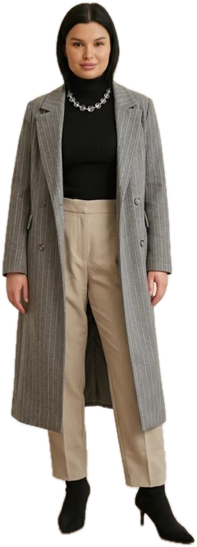

что надеть
каждый день
в октябре?
44 вещи из моего гардероба и 32 образа: по одному на каждый день октября, а на 9 октября — два. В начале месяца тренч и косуха, к концу пальто, мех и сапоги. Будни рабочие, пятница вечерняя, выходные свободные. Нажми на день, чтобы открыть образ.
32 образана мнеТёмные, почти чёрные волосы и светлая кожа. Мне идут чистые и глубокие цвета: чёрный, белый, шоколад, графит, деним. Бежевый и молочный у лица оживляю золотом, помадой или чёрной вещью рядом.
Плечи и бёдра в балансе, талия выражена. Подчёркиваю талию поясом, заправкой и корсетом. Высокая посадка и клёш с каблуком удлиняют ноги.
Чёрный, шоколад, серый, молочный, деним. Акценты: жёлтый, зелёный, голубой.
К коричневому золото, к серому и чёрному серебро. Не смешиваю в одном образе.
Худи, свитер или дутая куртка с облегающим низом. Свободный верх заправляю спереди.
Вечером чёрное на чёрном: кружево, кожа, атлас и шерсть.
Нажми на день, чтобы открыть образ: примерка, вещи и как носить. Внутри окна можно листать дни стрелками ← →.